class: center, middle background-image: url(./assets/img/foret_hr.jpg) count: false 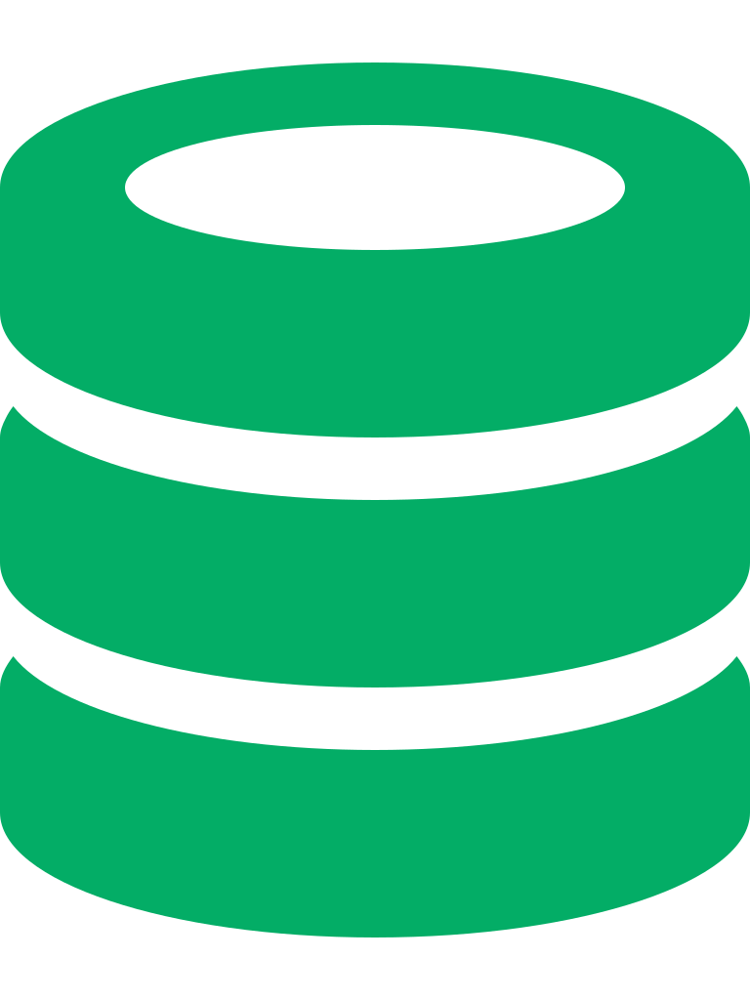 <h1 style="color:rgb(3, 173, 102);font-size:40px;margin-top:5px;text-shadow: 2px 2px 8px #000000;">Respecter ses données écologiques</h1> <hr style="width:30%"> <p style="color:white;text-shadow: 2px 2px 8px #000000;">Steve Vissault, M.Sc.</p> <p style="color:white;text-shadow: 2px 2px 8px #000000;">Écoinformaticien, Professionnel de recherche <br> Université de Sherbrooke</p> --- class: middle ## Mon parcours - **2007-2010**: Technique en Bioécologie (Cégep de La Pocatière) - **2010-2013**: B.Sc. en gestion de la faune et de ses habitats (UQAR) - **2013-2015**: M.Sc. sur la biogéographie et la dynamique de la forêt tempérée nordique du Québec (UQAR) ??? 1. Énumérer mes formations 2. Je suis avant tout un biologiste de formation 3. Clic, la question --- ## Mon parcours **Pourquoi un écologiste veut-il s'hybrider avec un informaticien?** <div class="row"> <div class="col-md-3" style="text-align:center;"> 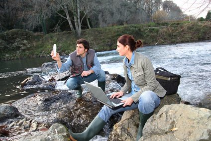</img> </div> <div class="col-md-1" style="text-align:center;"> <span style="font-size:40px">+</span> </div> <div class="col-md-3" style="text-align:center;"> 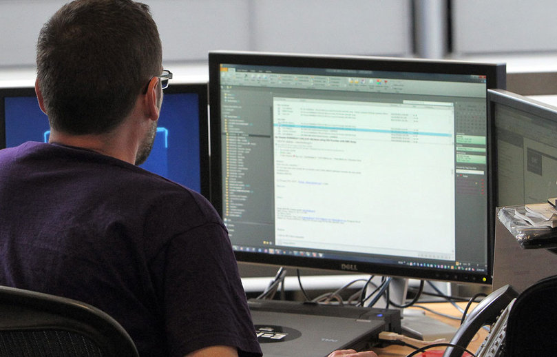</img> </div> <div class="col-md-1" style="text-align:center;"> <span style="font-size:40px">=</span> </div> <div class="col-md-4" style="text-align:center;"> </div> </div> --- count: false ## Mon parcours **Pourquoi un écologiste veut-il s'hybrider avec un informaticien?** <div class="row"> <div class="col-md-3" style="text-align:center;"> </img> </div> <div class="col-md-1" style="text-align:center;"> <span style="font-size:40px">+</span> </div> <div class="col-md-3" style="text-align:center;"> </img> </div> <div class="col-md-1" style="text-align:center;"> <span style="font-size:40px">=</span> </div> <div class="col-md-4" style="text-align:center;"> 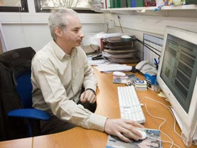</img></div> </div> --- count: false ## Mon parcours **Pourquoi un écologiste veut-il s'hybrider avec un informaticien?** <div class="row"> <div class="col-md-3" style="text-align:center;"> </img> </div> <div class="col-md-1" style="text-align:center;"> <span style="font-size:40px">+</span> </div> <div class="col-md-3" style="text-align:center;"> </img> </div> <div class="col-md-1" style="text-align:center;"> <span style="font-size:40px">=</span> </div> <div class="col-md-4" style="text-align:center;"> <span style="font-size:40px">Passion, Curiosité, Être un généraliste.</span> </div> </div> --- ## Premier contact avec une BD - **Printemps 2008**: Suivie de collecteurs d'ovocytes pour l'éperlan arc-en-ciel (*Osmerus mordax*) <div style="text-align:center;margin-bottom:15px;"> 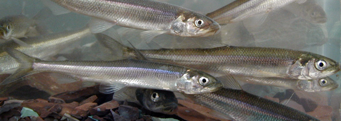 </div> - Contexte de suivie temporelle de la montaison, avec 30 étudiants sur le terrain - Lors des pics d'abondance, pose de micro-puces (*pit tags*) sur les reproducteurs par le MFFP. -- **Solution:** Développement d'une base de données Access pour standardiser la saisie, et visualiser les données en temps réel. <!-- Mettre photo éperlan et pit tag --> --- ## Premier contact avec une BD <div class="row"> <div class="col-sm-6"> <img src="./assets/img/eperlan2.jpg" width="100%"> </div> <div class="col-sm-6"> <ul> <li>Le hic, j'avais jamais touché à Access... j'ai donc fait râler quelques collègues qui auraient préféré rester sur Excel... </li> <li>C'était mon premier contact avec une base de données... et pas le dernier. Ainsi, commença l'hybridation...</li> </ul> </div> </div> ??? Si je reviens à cette question: Pourquoi ne pas rester sur Excel? Après quelques années d'expérience, j'ai enfin la réponse... --- class: middle ## Pourquoi ne pas rester sur Excel? -- #### Redéfinir une campagne d'échantillonnage, selon les données: 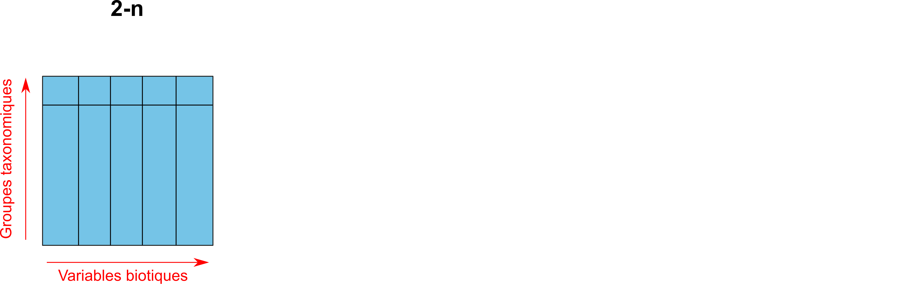 ??? - Il faut s'interroger sur ce que c'est qu'une campagne d'échantillonnage? --- class: middle ## Pourquoi ne pas rester sur Excel? #### Redéfinir une campagne d'échantillonnage, selon les données: 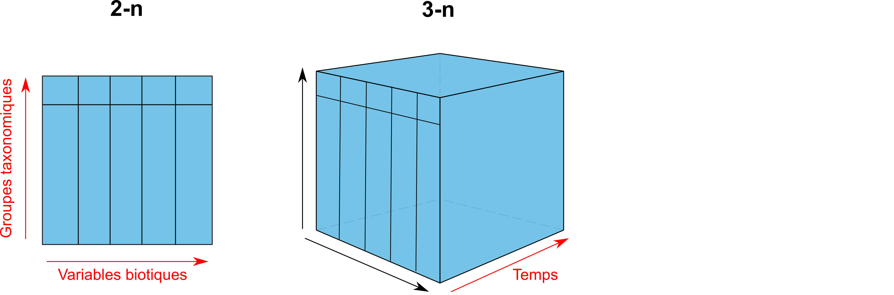 ??? - Il faut s'interroger sur ce que c'est qu'une campagne d'échantillonnage? --- class: middle ## Pourquoi ne pas rester sur Excel? #### Redéfinir une campagne d'échantillonnage, selon les données: <img src="./assets/img/data_cube_4n.png" width="100%" style="margin-top:40px;"> ??? - Il faut s'interroger sur ce que c'est qu'une campagne d'échantillonnage? --- ## Pourquoi les bases de données relationnelles? **La nature souvent multidimensionnelle d'une campagne d'échantillonnage.** - Cette difficulté à stocker l'information dans un chiffrier à 2-n, sera résolu par la création de tables et leurs mise en relation. - C'est l'objet du cours, alors je n'en dis pas plus. --- ## Pourquoi les bases de données relationnelles? #### Avantages: - Maintenir un **haut standard** de qualité des données - Imposer des contraintes à la saisie des données - Normalisation (ex. Éviter la redondance dans l'information stockée) - Intégrité référentielle (ex. Mesurer un individu sur un site d'échantillonnage qui n'éxiste pas dans la base de données). -- #### Et si la base de données est sur un serveur: - Système de sauvegarde automatisé (Administrateur système) - Approche multi-utilisateur --- ## Rencontre du directeur <div style="text-align:center;"> 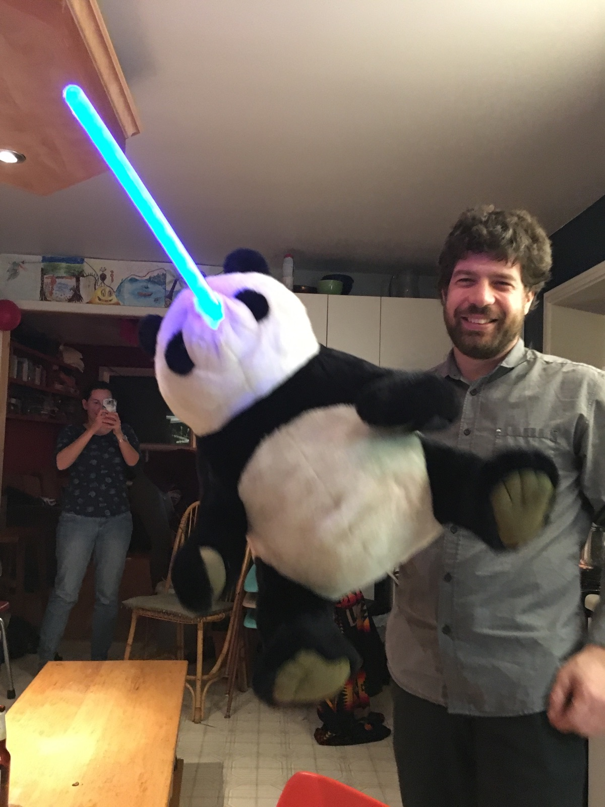 <div> ??? J'ai rencontré pendant mon baccalauréat une personne qui partageait cet interêt pour les bases de données. Dominique Gravel deviendra mon directeur de maitrise. Besoin d'une personne familière avec les bases de données pour structurer les données d'un projet - QUICC-FOR Proposition d'une maitrise --- ## Contexte de maitrise SLIDE --- ## Contexte d'étude **Modèle d'états et de transitions (STM)** pour étudier la dynamique de la forêt tempérée nordique sous les changements climatiques. <div style="text-align:center;"> 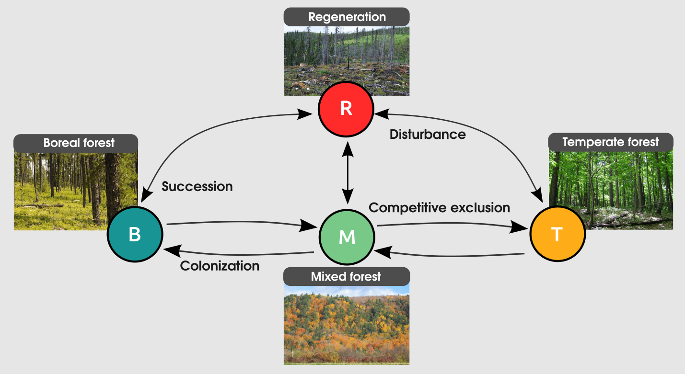 <div> --- ## Calibrer le modèle Pour alimenter la calibration du modèle, on a utilisé plusieurs bases de données de parcelles permanentes. <div style="text-align:center;"> 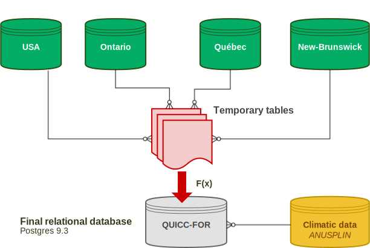 <div> --- ## Le résultat technique Distribution des parcelles forestières présentes dans la base de données. <div style="text-align:center;"> 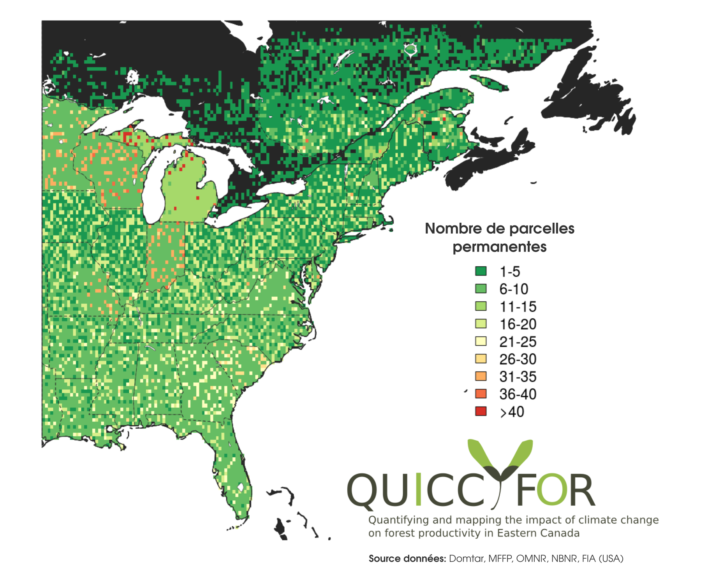 <div> --- ## Le résultat scientifique Diapo sur les sorties du modèle --- # Au delà de la question scientifique... Vos campagnes d'échantillonnage racontent l'histoire d'une population, ou d'un ensemble d'individus à un endroit à un moment donné. Il nous est **impossible de savoir la valeur intrinsèque, et l'utilisation future de ces données**. Leurs valeurs pourraient être **inestimable pour aider à la prise de décision des générations futures**. --- # Ce qu'il faut retenir... - Prenez soin de vos données en les entreposant adéquatement (en intégrant un descriptif du protocole d'échantillonage). - Valoriser vos données par le partage et la collaboration. -- - Et peut être, un jour serons nous en mesure d'utiliser l'ensemble de ces données pour prédire l'avenir de la biosphère? <div style="text-align:center;"> <img src="./assets/img/PurvesNature.jpg" height="350px"> <div>